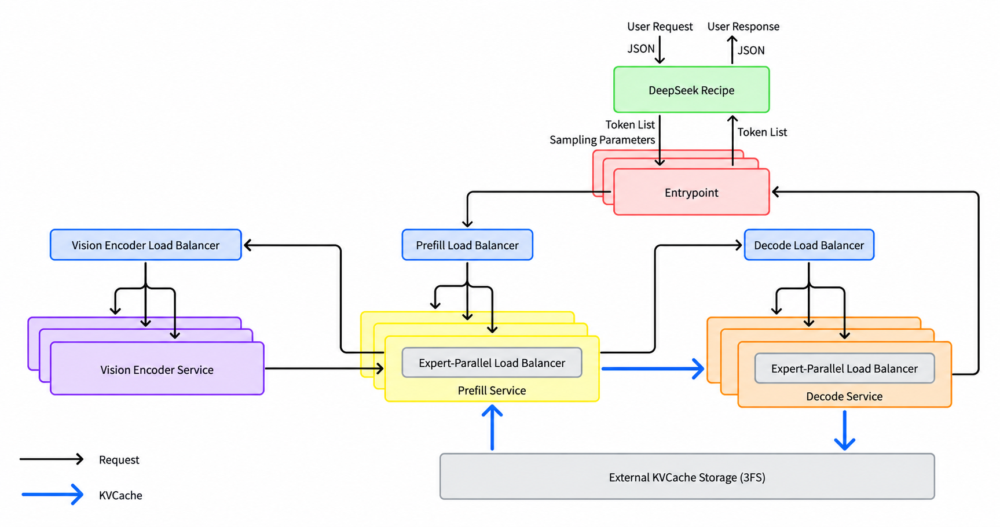

DeepInfer Explained
Code version: DeepInfer @ 9bd9cf2 · 2026-10-21
DeepInfer is DeepSeek's inference framework: the program that runs a trained model and makes its answers. It "powers DeepSeek's large-scale production services" (README.md:3). This open-source release runs one model, DeepSeek-V4.1-Flash, on NVIDIA SM100 GPUs and on Huawei Ascend 950 NPUs (README.md:5-7, README.md:33-36). It does offline inference: your Python script gives it a list of prompts and gets the answers back (README.md:3). DeepInfer "was originally built primarily on vLLM" (README.md:95), and many files still say "Derived from vLLM; modified by DeepSeek."
This site explains the code at commit 9bd9cf2. To get exactly this version of the code, read The code version this site explains. You need to know Python. You do not need to know machine learning: Part 1 teaches the basics first.
| Model | DeepSeek-V4.1-Flash, a Mixture-of-Experts LLM with a draft model for speculative decoding and an image encoder |
|---|---|
| Hardware | NVIDIA SM100 GPUs (CUDA 13) or Huawei Ascend 950 NPUs (CANN 9.2) (README.md:51-52) |
| Code size | 342 files, 63,629 lines. Python package deepinfer/: 47,174 lines. C++ engine csrc/: 5,908 lines. See Code map: the folder tree. |
| Run it | python examples/offline_inference.py (README.md:72) |
The system map#
The map shows the main parts of DeepInfer and the order in which a request goes through them. Each box is a link. Click a box to open its page. Grey links are pages that are not written yet.
The path of a request
1 · Your script calls LLM.generate()
deepinfer/entrypoints/llm.py
Turns each prompt into token ids and adds it to the engine. Then calls step() until all requests are finished.
Also: Tour 1 · the step loop
SamplingParamsdeepinfer/engine/llm_engine.py
Starts the workers and the KV cache. Makes one sequence per request. Runs one engine step per call.
Also: request lifecycle · start-up tour
3 · C++ scheduler and block manager
csrc/engine/scheduler.hpp · block_manager.hpp
Picks the sequences for each step: prefill or decode. Gives each sequence KV cache blocks, and takes them back.
Also: scheduler.hpp · paged KV cache
4 · Worker and ModelRunner
deepinfer/worker/worker.py · model_runner.py
Builds the input tensors (with C++ help), then launches the model and the sampler on the device. Replays CUDA graphs for decode.
Also: input metadata · CUDA graphs · one engine step
5 · The model: DeepSeek-V4.1-Flash
deepinfer/model_executor/models/
A stack of decoder layers. Each layer runs attention, then a Mixture-of-Experts block.
Attention
attn.py
indexer · SWA
MoE
mlp.py
mega-MoE · Engram
MTP draft
dflash.py
DSpark · tour
Also: inside one decoder layer · image encoder
6 · Sampler
deepinfer/model_executor/layers/sampler.py
Picks the next token of each sequence, and checks the draft tokens.
Also: structured outputs · determinism
7 · Outputs back to your script
csrc/engine/outputs.hpp → LLMEngine.step()
The scheduler adds the tokens to each sequence. C++ builds RequestOutput objects, and step() returns them to LLM.
Also: why outputs come one step late
Around every step
KV cache and memory
deepinfer/worker/cache_engine.py
Device memory for the keys and values of earlier tokens, in blocks of 128 tokens.
Also: basics · compression · cross-layer sharing · SWA replay
Zero-overhead scheduling
csrc/engine/zos.cpp
The CPU prepares the next step while the device still computes this one.
Parallelism
model_executor/parallel_utils/
Many devices work on one model: data, context and expert parallelism.
Also: DP votes · CP · EP · EPLB · tour
platform.py · layers/tilelang_ops/ · vendor/
One Platform object for NVIDIA or Ascend. TileLang kernels, plus kernel libraries outside the repo.
Also: TileLang · FP8 and FP4 · Python and C++
Start-up and weights
deepinfer/hugging_face/ · deep_cluster/
Finds the hardware, loads the checkpoint, measures free memory.
Also: hardware discovery · start-up tour
Python on the CPUC++ on the CPUwork on the GPU or NPUparts used in every step
How to read the map. Follow the left column from 1 to 7. Boxes 1 to 4 and 7 run on the CPU. Boxes 5 and 6 run on the device. The right column shows parts that every step uses. The map leaves out many details, for example the image pre-processing and the statistics.
Start here#
Choose the path that matches what you know now.
-
A. New to machine learning#
Read Part 1 in order. Each page is short and has no DeepInfer code.
- What an LLM does
- Tokens and tokenizers
- Inside a transformer
- Attention, step by step
- Prefill and decode
- The KV cache
- Sampling: temperature, top-k, top-p
- Batching
- GPUs, kernels, and speed
- Parallelism basics
- Mixture of Experts (MoE)
- Number formats: BF16, FP8, FP4
Then follow Tour: Life of a request. Then read the concept pages of the Engine group.
-
B. You know how LLMs work#
- Follow Tour: Life of a request.
- Read the concepts, one group at a time:
- Engine: step loop, scheduler, paged KV cache, ZOS
- Model: model map, MLA, MoE routing
- Decoding: sampler, speculative decoding
- Scale: expert parallelism, DP votes
- Platform: NVIDIA and Ascend, TileLang
- Then take the other tours: start-up, one step, one layer, one draft round, many GPUs.
-
C. You study one part#
- Engine loop: concept · llm_engine.py · tour
- Scheduling and memory: scheduler · KV cache · scheduler.hpp
- Attention: MLA · indexer · compression · attn.py
- MoE: routing · mega-MoE · EPLB · mlp.py
- Decoding: sampler · speculative · structured · sampler.py
- Hardware: platforms · kernels · platform.py
- Settings: Environment variables · Config classes
- A file: Code map: the folder tree
How to use this site#
- Levels. Each page has a badge: Beginner, Intermediate or Advanced. A "Before you read" box lists the pages to read first.
- Two depths on each page. A page starts with one sentence, a plain explanation and a diagram. Then it shows the real code. Deep dive boxes give the full detail: tensor shapes, memory layouts, edge cases and environment variables. Click a deep dive to open it.
- Check yourself. Most pages end with 3 to 5 questions. Answer each one, then click "Show answer".
- Search. Press /, then type a word, a file name or an environment variable.
- Glossary. Words with a dotted line, such as KV cache, are glossary terms. Point to them, or tap them on a phone, to see a short definition. Glossary lists all terms.
- Code. Every code excerpt is copied from the repository by the build. The file path above an excerpt, and every
file:linelink, opens GitHub at commit9bd9cf2. - Chinese comments. Many comments in the code are in Chinese. The site translates the useful ones and marks them as translated.
- Grey entries in the menu are pages that are not written yet. Diagrams open at full size when you click them.
What is not in this release#
The README lists three parts that a complete inference service needs, but that this release does not include (README.md:38-42):
- A KV cache system that keeps the KV cache of old requests for reuse. The Q&A says that this part is tied to DeepSeek's internal systems and is not open source yet (
doc/inference_deployment_qa.md:21). The production service stores it on a 3FS storage cluster (doc/inference_deployment_qa.md:141). - VE/Prefill/Decode disaggregation (E/P/D): separate services for the image encoder, for prefill and for decode. The README says that "most required engine functionality is already implemented". You can see empty hook methods for it in LLMEngine.
- Load balancing across data-parallel replicas, for prefill and for decode.
The picture below comes from the deployment Q&A in doc/. It shows the whole production system. This repository contains the engine that runs inside these services, with its expert-parallel load balancer (EPLB). In this release, one NORMAL engine does prefill and decode in the same process (deepinfer/engine/arg_utils.py:41), and the model runs the image encoder itself (deepinfer/model_executor/models/deepseek_vl.py:26-34). The entrypoint, the DeepSeek Recipe, the three load balancers and the external KV cache storage are not in this repository.

doc/inference_deployment_qa.md:37-39). Only the engine inside the prefill and decode services is in this repository. Source: doc/images/architecture_overview.pngThe code version this site explains#
This site explains one exact version of the DeepInfer repository. Use this version when you study the code with the site.
| Commit | 9bd9cf243fc53ef9afbf8f04d391d989117d6ab9 (short: 9bd9cf2) |
|---|---|
| Date | 2026-10-21 12:55:43 +0800 |
| Subject | "Bump DeepEP to f6aa38fe and drop the SSH->HTTPS rewrite (#157)" |
| History | The repository has 4 commits at this point. This commit is the newest of them. |
| Browse | github.com/deepseek-ai/DeepInfer at 9bd9cf2 |
To get exactly this version, run these commands. The last command gets the kernel libraries at their pinned commits.
git clone https://github.com/deepseek-ai/DeepInfer.git
cd DeepInfer
git checkout 9bd9cf243fc53ef9afbf8f04d391d989117d6ab9
git submodule update --init --recursiveThe repository pins six kernel libraries as git submodules in vendor/ (.gitmodules). This table shows the commit of each one at 9bd9cf2:
| Submodule | Pinned commit |
|---|---|
vendor/DeepEP | f6aa38fe06cd4a0489e7730365d4e0114970a2f3 |
vendor/DeepEP-Ascend | 3b25377d04b24fc6154698ded78a2bcb2c59afff |
vendor/DeepGEMM | 1fc9c66975ee322d628b3288534ca0e9ce12a64d |
vendor/DeepGEMM-Ascend | 3a35326271b069b8b5bf1a754435acd6cc91575b |
vendor/DeepSelect | bfa4507d935f17ebfc3d0f00ff7d3c9a4d0e5c18 |
vendor/FlashMLA | 2e5429fc5653bab6e081f09477126f731882a6a9 |